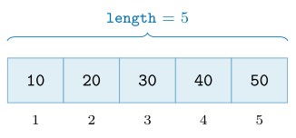
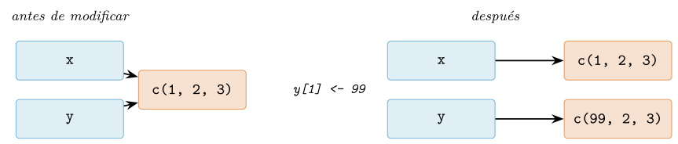

Capítulo 2. El modelo de datos de R: vectores, copia y NA
▶ Ejecutar este capítulo en Binder
La primera vez que se abre, Binder construye el entorno en la nube (unos 10-20 min); verás una pantalla de progreso. Después queda en caché y abre en segundos. Si parece que no responde, espera a que termine de construirse o vuelve a intentarlo.
Cada lenguaje tiene un modelo mental que explica por qué hace lo que hace, y entenderlo temprano ahorra años de sorpresas. El de Python es «todo es un objeto»; el de R es distinto y, para trabajar con datos, más afortunado: todo es un vector, la copia es por valor pero perezosa, el valor ausente tiene tipo, y los argumentos de una función no se evalúan hasta que se usan. Ninguna de estas cuatro ideas es un detalle académico: la primera explica por qué una operación se aplica a un millón de números sin un bucle (cap. 7), la segunda por qué modificar una tabla no estropea otra (cap. 8), la tercera por qué R es tan cuidadoso con los datos que faltan (cap. 10), y la cuarta sostiene la manipulación con dplyr y la gramática de gráficos (cap. 6). Este capítulo construye ese modelo, y cada cifra que aparece se ha medido ejecutando el código en R.
Todo es un vector
En R no existen los números sueltos. Lo que en otros lenguajes es un escalar —un 42— en R es un vector de longitud uno. No es una sutileza: es la clave de que las operaciones se apliquen a colecciones enteras sin escribir un bucle.
x <- 42
length(x) # 1 <- "42" es un vector de un elemento
is.vector(x) # TRUECuando R imprime un vector, antepone entre corchetes el índice del primer elemento de cada línea. Ese [1] que aparece en toda salida no es decorativo: es el recordatorio permanente de que estás mirando un vector, y su primer elemento ocupa la posición 1 (R indexa desde uno, no desde cero).
c(10, 20, 30, 40, 50, 60, 70, 80, 90, 100, 110)
# [1] 10 20 30 40 50 60 70 80 90 100 110La función c() —de combine— es la que construye vectores pegando elementos. La figura 2.1 muestra la anatomía: una secuencia de celdas del mismo tipo, con una longitud y un índice que empieza en uno.

Los seis tipos atómicos
Un vector atómico contiene elementos de un único tipo, y R tiene seis, resumidos en la tabla 2.1. Los cuatro primeros —lógico, entero, doble y carácter— cubren casi todo el trabajo de datos; los complejos aparecen en cálculo numérico y los crudos (raw) en el manejo de bytes. La función typeof() revela el tipo interno de cualquier vector.
typeof() |
Contenido | Literal de ejemplo |
|---|---|---|
logical |
verdadero/falso/ausente | TRUE, FALSE, NA |
integer |
enteros | 42L, -7L |
double |
coma flotante | 3.14, 42, 1e-9 |
character |
cadenas de texto | "pop", "café" |
complex |
números complejos | 1+2i |
raw |
bytes | as.raw(255) |
typeof(1L) # "integer" <- la L fuerza entero
typeof(1) # "double" <- sin L, coma flotante por defecto
typeof("pop") # "character"
typeof(TRUE) # "logical"
typeof(1+0i) # "complex"Conviene fijar desde ya una distinción que confunde a quien viene de otros lenguajes: un número literal como 42 es un doble, no un entero. Para obtener un entero hay que escribir 42L. En la práctica del análisis de datos la diferencia rara vez importa —R promociona entre ambos sin avisar—, pero conviene saberlo para no sorprenderse cuando typeof(42) responde "double".
Vectorización y reciclaje
Que todo sea un vector tiene una consecuencia inmediata y poderosa: las operaciones se aplican elemento a elemento sobre el vector entero, sin bucle. Sumar dos vectores suma sus elementos emparejados; multiplicar un vector por un número multiplica cada elemento.
c(1, 2, 3, 4) * 10 # 10 20 30 40 <- sin bucle
c(1, 2, 3, 4) + c(10, 20, 30, 40) # 11 22 33 44¿Y si los vectores tienen longitudes distintas? R aplica la regla del reciclaje: repite el más corto tantas veces como haga falta para igualar al más largo. Es cómodo cuando el corto tiene longitud uno (multiplicar por un escalar es un caso de reciclaje), pero es una fuente de errores sutiles cuando las longitudes no encajan:
c(1, 2, 3, 4) + c(10, 20) # 11 22 13 24 <- (10,20) se recicla a (10,20,10,20)Aquí no hay error ni aviso: R recicla (10, 20) en silencio y devuelve un resultado que casi nunca es el que se quería. La vectorización es la gran virtud de R, y el reciclaje silencioso, su trampa gemela; el capítulo 7 vuelve sobre ambos con el detalle que merecen.
Tipos y coerción
typeof, class y mode
R ofrece tres funciones para preguntar «qué es esto», y distinguirlas evita confusión. typeof() devuelve el tipo interno (los de la tabla 2.1); class() devuelve la clase de alto nivel, la que usa el sistema de objetos (cap. 6) para decidir cómo se comporta; y mode(), más antigua y tosca, se usa poco. La diferencia se ve con una matriz, que por dentro es un vector de enteros pero se presenta como matriz:
m <- 1:6
dim(m) <- c(2, 3) # le damos una dimension
typeof(m) # "integer" <- por dentro sigue siendo un vector de enteros
class(m) # "matrix" "array" <- pero se comporta como una matrizLa jerarquía de coerción
Como un vector atómico solo admite un tipo, ¿qué ocurre al mezclar? R coacciona todos los elementos al tipo más general presente, siguiendo la jerarquía de la figura 2.2: lógico se promociona a entero, entero a doble, y cualquiera a carácter. La regla es que el carácter lo absorbe todo, porque cualquier valor se puede escribir como texto.

c(TRUE, 1L, 2.5) # 1.0 1.0 2.5 <- todo a double
c(TRUE, 1L, 2.5, "x") # "TRUE" "1" "2.5" "x" <- todo a characterEsta coerción no es solo un mecanismo interno: se aprovecha constantemente. Como TRUE vale 1 y FALSE vale 0 al promocionarse a número, sumar un vector lógico cuenta cuántos TRUE hay, un idioma que reaparecerá sin cesar:
sum(c(TRUE, TRUE, FALSE, TRUE)) # 3 <- cuenta los TRUE
mean(c(TRUE, TRUE, FALSE, TRUE)) # 0.75 <- proporcion de TRUELa coerción explícita se pide con la familia as.* (as.integer, as.character, as.numeric), y la comprobación de tipo con la familia is.* (is.numeric, is.character). Conviene comprobar antes que lamentar: una columna que crees numérica pero llegó como texto es una causa clásica de resultados absurdos, y el capítulo 10 hace de esa comprobación una disciplina.
Números: enteros, coma flotante y precisión
Los dos tipos numéricos que dominan el trabajo de datos —integer y double— merecen una mirada de cerca, porque sus límites explican errores que, sin conocerlos, parecen magia negra. La tabla 2.2 los sitúa.
| Tipo | Rango / precisión | Uso típico |
|---|---|---|
integer |
\(\pm 2{,}1 \times 10^{9}\) (32 bits) | índices, códigos, conteos |
double |
\(\sim\)15–16 dígitos; hasta \(\sim 1{,}8 \times 10^{308}\) | todo cálculo real |
complex |
dos dobles (real + imaginaria) | señal, Fourier |
Enteros de 32 bits y el desbordamiento
El entero de R es de 32 bits con signo, de modo que su valor máximo es .Machine$integer.max, algo más de dos mil millones. Pasarse de ahí no da un número mayor: da NA, con un aviso. Es un comportamiento prudente —R prefiere avisar a devolver basura— pero sorprende a quien espera aritmética ilimitada:
.Machine$integer.max # 2147483647
.Machine$integer.max + 1L # NA (con aviso: "NAs produced by integer overflow")La solución es casi siempre no usar enteros para cuentas grandes: un doble llega sin problema hasta \(2^{53}\) manteniendo la exactitud, y R usa dobles por defecto justamente para evitar este escollo. Los enteros se reservan para índices, códigos y cuando la memoria importa de verdad.
Coma flotante y sus límites
El doble sigue el estándar IEEE 754 (IEEE 2019): 64 bits que representan un número real con unos 15–16 dígitos decimales de precisión. Esa precisión es finita, y de ahí el hecho que más desconcierta a los principiantes: hay decimales que no tienen representación exacta en binario, igual que \(1/3\) no la tiene en decimal.
0.1 + 0.2 == 0.3 # FALSE (!)
print(0.1 + 0.2, digits = 17) # 0.30000000000000004 <- el error escondidoLa lección operativa es contundente: nunca compares dobles con ==. Para preguntar si dos reales son «prácticamente iguales» está all.equal(), que admite una tolerancia (por defecto, del orden de .Machine$double.eps, unos \(2 \times
10^{-16}\)). Un detalle: all.equal() devuelve TRUE si coinciden pero un mensaje de texto si difieren, así que para un if conviene envolverlo en isTRUE():
all.equal(0.1 + 0.2, 0.3) # TRUE <- iguales dentro de la tolerancia
isTRUE(all.equal(0.1 + 0.2, 0.3)) # TRUE <- forma segura para una condicionInfinito, no-número y bits
La coma flotante trae tres valores especiales que ya asomaron en la tabla 2.3: Inf y -Inf para el desbordamiento o la división por cero, y NaN (Not a Number) para lo indefinido como 0/0. Se comprueban con is.finite(), is.infinite() e is.nan():
1 / 0 # Inf
-1 / 0 # -Inf
0 / 0 # NaNY, para el trabajo a bajo nivel, R ofrece operaciones de bits sobre enteros —bitwAnd, bitwOr, bitwXor y los desplazamientos bitwShiftL/bitwShiftR— útiles en máscaras y códigos compactos:
bitwAnd(12L, 10L) # 8 (1100 & 1010 = 1000)
bitwOr(12L, 10L) # 14 (1100 | 1010 = 1110)
bitwShiftL(1L, 4L) # 16 (desplazar 1 cuatro bits = 2^4)El valor ausente: NA tipado
Aquí R juega en casa. En un lenguaje pensado para la estadística, los datos que faltan no son una excepción rara, sino el pan de cada día: una encuesta con respuestas en blanco, un sensor que se apagó, un registro incompleto. R eleva la ausencia a ciudadana de primera clase con el valor NA (Not Available), y —esto es lo distintivo— el NA tiene tipo.
Un NA para cada tipo
El NA pelado es lógico, pero existe una variante tipada para cada vector, de modo que un ausente nunca rompe la homogeneidad de tipos (tabla 2.3). Casi nunca hay que escribirlas a mano —R las inserta con el tipo correcto—, pero saber que existen explica por qué una columna con ausentes conserva su tipo.
| Valor | Significado | length |
|---|---|---|
NA, NA_real_, NA_integer_ |
dato ausente, con tipo | 1 |
NULL |
ausencia de objeto (vector vacío) | 0 |
NaN |
«no es un número» (0/0) |
1 |
Inf, -Inf |
infinito (1/0) |
1 |
typeof(NA) # "logical" <- el NA pelado es logico
typeof(NA_real_) # "double"
typeof(NA_integer_) # "integer"
c(1.5, NA, 3.0) # 1.5 NA 3.0 <- R inserta un NA_real_, la columna sigue doubleLa ausencia se propaga
La regla de oro del NA es que se propaga: cualquier operación con un ausente da un ausente, porque «no sé» operado con lo que sea sigue siendo «no sé». Es una decisión de diseño prudente —R prefiere avisar de que no sabe a inventarse un número— pero obliga a ser explícito:
NA + 1 # NA <- no se cuanto es "ausente mas uno"
NA > 3 # NA <- ni siquiera una comparacion escapa
mean(c(1, 2, NA)) # NA <- un solo ausente contamina el promedio
mean(c(1, 2, NA), na.rm = TRUE) # 1.5 <- na.rm = TRUE lo excluye explicitamenteEse na.rm = TRUE —«quita los ausentes antes de calcular»— es uno de los argumentos más tecleados en R, y su obligatoriedad es precisamente la virtud: no puedes calcular una media sobre datos incompletos sin decidir qué hacer con los huecos. Conviene además no confundir NA con NULL: el primero es un hueco dentro de un vector (longitud 1); el segundo es la ausencia de vector (longitud 0), que se usa para «este argumento no se ha dado» o para eliminar un elemento de una lista.
Valores lógicos, condiciones y cortocircuito
El tipo lógico tiene solo tres valores —TRUE, FALSE y NA— pero su manejo esconde varias de las trampas más frecuentes de R, casi todas consecuencia, una vez más, de que aquí todo es un vector.
Vectorizado frente a escalar: & y &&
R tiene dos familias de operadores lógicos, y confundirlas es un error clásico (tabla 2.4). Los vectorizados & y | operan elemento a elemento sobre vectores enteros y devuelven un vector —son los que se usan para combinar máscaras de filtrado (cap. 8)—. Los escalares && y || esperan un solo valor a cada lado, devuelven un solo valor y cortocircuitan: evalúan el segundo operando solo si hace falta.
| Operador | Actúa sobre | Uso |
|---|---|---|
&, | |
vectores (elemento a elemento) | combinar máscaras de filtrado |
&&, || |
un solo valor (cortocircuito) | la condición de un if |
! |
vector o valor | negación |
c(TRUE, FALSE, TRUE) & c(TRUE, TRUE, FALSE) # TRUE FALSE FALSE <- elemento a elemento
TRUE || stop("no me evaluo") # TRUE <- cortocircuito: el stop no correLa regla: && y || son para el if (un solo sí/no); & y |, para filtrar vectores. Desde R 4.3, usar && con un vector de más de un elemento es un error, precisamente para atajar la confusión.
El NA en una condición
Como NA significa «no sé», una condición que dependa de un ausente no puede decidir el camino, y R lo trata como un error, no como un falso silencioso:
if (NA) 1 else 2 # Error: valor ausente donde TRUE/FALSE es necesarioPara blindar una condición frente a ausentes están isTRUE() e isFALSE(), que devuelven FALSE ante cualquier cosa que no sea exactamente un único TRUE (o FALSE), incluido NA. Y para resumir un vector lógico a un solo valor, any() («¿alguno?») y all() («¿todos?»), que propagan el NA salvo que se pida na.rm = TRUE:
isTRUE(NA) # FALSE <- seguro para un if
any(c(TRUE, NA)) # TRUE <- ya hay un TRUE; el NA no cambia el resultado
any(c(FALSE, NA)) # NA <- podria haber un TRUE escondido en el ausente
all(c(TRUE, NA)) # NAEl patrón «valor por defecto»
Un idioma muy común da un valor por defecto cuando algo es NULL: el operador %||% de rlang devuelve su primer operando si no es NULL, y el segundo si lo es. Es el equivalente idiomático del «usa esto, o esto otro si no hay nada»:
library(rlang)
config_puerto <- NULL
config_puerto %||% 8080 # 8080 <- NULL -> valor por defectoA diferencia del patrón análogo de otros lenguajes, %||% solo mira si el valor es NULL, no si es «falso», de modo que un 0 o una cadena vacía legítimos no se pierden por el camino.
Cadenas de texto y codificación
El vector de caracteres guarda texto, y su manejo esconde una sutileza que en un mundo de datos multilingües es imprescindible: la diferencia entre caracteres y bytes.
Caracteres, no bytes
R almacena el texto en UTF-8, donde un carácter puede ocupar varios bytes. Por eso nchar() cuenta, por defecto, caracteres —lo que una persona percibe— y no bytes; solo si se pide type = "bytes" devuelve el tamaño en memoria:
nchar("café") # 4 <- cuatro caracteres
nchar("café", type = "bytes") # 5 <- pero cinco bytes: la "é" ocupa dosConfundir caracteres con bytes es la raíz del mojibake —esos «Ã©» que aparecen donde debería haber una «é»— que surge al leer un fichero con la codificación equivocada. La consigna, que el capítulo 5 convierte en disciplina, es declarar siempre la codificación (UTF-8) al leer y escribir texto.
Construir y formatear texto
Para componer texto, R base ofrece paste() (une con un separador), paste0() (une sin separador) y, para el control fino, sprintf(), que inserta valores en una plantilla con la mini-sintaxis heredada de C —%d para enteros, %.2f para dos decimales, %s para cadenas—:
paste("pop", "rock", sep = " / ") # "pop / rock"
paste0("cap", "02") # "cap02"
sprintf("energia media: %.2f", 0.726) # "energia media: 0.73"
sprintf("%d de %d generos", 6L, 114L) # "6 de 114 generos"La manipulación seria de texto —buscar, sustituir, separar por un patrón, expresiones regulares— se apoya en el paquete stringr del tidyverse, con una familia de funciones str_* de nombres predecibles, y llega en el capítulo 5 cuando importemos y limpiemos el catálogo de música. Aquí basta con saber componer y formatear, que es lo que necesita un informe reproducible: una cifra medida se inserta en el texto con sprintf, nunca se teclea a mano.
Atributos: vectores con metadatos
Un vector atómico puede llevar atributos: metadatos pegados que no cambian su contenido pero sí cómo se interpreta. Los atributos son el mecanismo con el que R construye, sobre el humilde vector, estructuras mucho más ricas. Dos son omnipresentes: names (una etiqueta por elemento) y dim (una forma).
edades <- c(ana = 34, luis = 28, eva = 41) # el atributo names
edades["luis"] # luis \n 28 <- se indexa por nombre
attributes(edades) # $names -> "ana" "luis" "eva"El caso de dim es revelador, porque desmonta un misterio: una matriz es un vector con un atributo dim. No hay un «tipo matriz» aparte; hay un vector de seis enteros al que se le dice «organízate en dos filas y tres columnas». El mismo dato, la misma memoria, otra interpretación.
m <- 1:6
dim(m) <- c(2, 3) # el atributo dim convierte el vector en matriz
m
# [,1] [,2] [,3]
# [1,] 1 3 5
# [2,] 2 4 6El atributo más importante de todos es class, porque es el que gobierna el comportamiento: es lo que distingue un vector de enteros de un factor, o una lista de un data frame, aunque por dentro compartan representación. Sobre ese atributo se levanta todo el sistema de objetos del capítulo 6. Los dos siguientes apartados muestran las dos estructuras que más se construyen así: los factores y las listas.
Factores: categorías con niveles
Un factor representa una variable categórica —el género de una pista, el país de un usuario, el nivel de un tratamiento— y es, por dentro, un vector de enteros con un atributo levels que asocia cada entero a una etiqueta. Esta representación es eficiente (almacena enteros pequeños, no cadenas repetidas) y, sobre todo, hace explícito el conjunto de categorías posibles, lo que importa para modelar (cap. 13) y para graficar (cap. 12).
f <- factor(c("beta", "alfa", "beta", "gamma"))
f
# [1] beta alfa beta gamma
# Levels: alfa beta gamma <- las categorias posibles, ordenadas
typeof(f) # "integer" <- por dentro son enteros...
levels(f) # "alfa" "beta" "gamma"
as.integer(f) # 2 1 2 3 <- ...que son codigos de los nivelesEsa doble naturaleza —enteros por dentro, etiquetas por fuera— esconde una de las trampas más citadas de R. Si un factor tiene por etiquetas números escritos como texto, as.integer() no devuelve esos números, sino los códigos internos de los niveles:
g <- factor(c("10", "20", "30"))
as.integer(g) # 1 2 3 <- codigos, NO 10 20 30
as.integer(as.character(g)) # 10 20 30 <- lo correcto: primero a textoLa regla que evita el desastre: para recuperar los números de un factor, pasa primero por as.character(). La trampa es tan habitual que conviene grabarla ahora.
Listas y el data frame
Los vectores atómicos son homogéneos: todos sus elementos comparten tipo. Cuando se necesita mezclar —un texto, un número y un valor lógico en la misma estructura— entra la lista, un vector recursivo cuyos elementos pueden ser de cualquier tipo, incluidas otras listas.
pista <- list(titulo = "Clocks", energia = 0.72, explicita = FALSE)
typeof(pista) # "list"
pista[["energia"]] # 0.72 <- [[ ]] extrae UN elemento
pista["energia"] # una lista de un elemento (energia = 0.72)La distinción entre [[ ]] y [ ] es fuente de tropiezos y conviene fijarla: [[ ]] extrae el contenido de un elemento (el número 0.72); [ ] devuelve una sublista (que contiene ese elemento). La metáfora habitual: si la lista es un tren de vagones, [ ] te da un tren más corto y [[ ]] te da lo que hay dentro de un vagón.
La lista importa porque de ella nace la estructura central de todo el libro: el data frame, que es una lista de columnas de la misma longitud. Cada columna es un vector (atómico o factor); todas comparten longitud; y el conjunto se presenta como una tabla. Esa es la razón de que un data frame pueda tener una columna de texto junto a una numérica y otra lógica —cada una es un vector de su tipo—, y de que las operaciones por columna sean naturales y baratas. El capítulo 8 lo convierte en el tibble y construye sobre él todo el análisis tabular.
Copy-on-modify: la semántica de copia
Llegamos a la idea que más distingue a R y que más malentendidos evita una vez comprendida. En R, asignar un vector a un segundo nombre no copia los datos: los dos nombres apuntan, de momento, al mismo objeto en memoria. La copia solo ocurre —y solo entonces— cuando uno de los dos intenta modificar el objeto compartido. Es la semántica de copia al modificar (copy-on-modify), y se puede observar con la dirección de memoria que devuelve lobstr::obj_addr().
library(lobstr)
x <- c(1, 2, 3)
y <- x # y NO copia: comparte objeto con x
obj_addr(x) == obj_addr(y) # TRUE <- misma direccion de memoria
y[1] <- 99 # al modificar y, R copia el objeto compartido
obj_addr(x) == obj_addr(y) # FALSE <- ahora son objetos distintos
x # 1 2 3 <- x quedo intacto
y # 99 2 3La figura 2.3 lo esquematiza. Antes de modificar, x e y son dos etiquetas sobre un solo vector. En cuanto y cambia un elemento, R fabrica una copia para y y deja intacto el original de x. El resultado es lo mejor de dos mundos: la comodidad de razonar como si cada asignación copiara —tus datos nunca se estropean a distancia— con el coste de una copia solo cuando de verdad se necesita.

y <- x, ambos nombres comparten un solo objeto; solo cuando y se modifica, R lo copia y x queda intacto. La copia se paga únicamente cuando de verdad hace falta.Ver la copia con tracemem
La función tracemem() marca un objeto y avisa cada vez que R lo copia, mostrando la dirección de origen y la de destino. Es la mejor forma de ver la copia al modificar en acción —y de comprobar que no ocurre cuando no hace falta—:
x <- c(1, 2, 3); y <- x # x e y comparten
tracemem(x) # "<0x5c7f87c6e5c8>"
y[1] <- 99 # tracemem[0x...5c8 -> 0x...528]: <- se copio!
z <- c(1, 2, 3) # una sola referencia, nadie mas comparte
tracemem(z)
z[1] <- 99 # (silencio) <- se modifico in situ, SIN copiaLa diferencia entre los dos casos es la clave del modelo, y desde R 3.5 el intérprete la afina con un contador de referencias: si un objeto tiene una sola referencia, modificarlo no necesita copia y R lo cambia in situ; si tiene dos o más, la modificación desencadena la copia que protege a las otras. Entender esto convierte un misterio («¿por qué a veces es lento?») en una regla operativa.
La consecuencia práctica: no hagas crecer un vector
De este modelo se deriva el anti-patrón estrella de R, el que más código lento ha producido: hacer crecer un vector dentro de un bucle. Cada v <- c(v, nuevo) crea un vector nuevo, más largo, y copia todo lo anterior; repetido \(n\) veces, el coste es cuadrático. La alternativa —reservar el espacio de antemano y rellenarlo— evita todas esas copias:
crecer <- function(n) {
v <- c() # anti-patron: crece copiando en cada vuelta
for (i in 1:n) v <- c(v, i^2)
v
}
preasignar <- function(n) {
v <- numeric(n) # reserva el espacio de una vez
for (i in 1:n) v[i] <- i^2 # rellena in situ, sin copiar
v
}
# con n = 20 000, "preasignar" es del orden de setenta veces mas rapidoLa cifra exacta depende de la máquina —por eso la damos como cociente, no como segundos—, pero el orden de magnitud es contundente y la lección, general: en R, la forma idiomática y rápida casi nunca es el bucle que crece, sino la operación vectorizada o el vector preasignado (cap. 7).
Environments: la excepción mutable
Toda regla tiene su excepción, y la de la copia al valor es el entorno (environment). A diferencia de los vectores y las listas, un entorno tiene semántica de referencia: dos nombres que apuntan al mismo entorno ven, ambos, los cambios de cualquiera. Es la única estructura de datos mutable de R.
e1 <- new.env()
e2 <- e1 # e2 NO copia: es una referencia al MISMO entorno
e1$valor <- 42
e2$valor # 42 <- el cambio en e1 se ve desde e2Los entornos son, además, la pieza con la que R implementa los ámbitos de las funciones (cap. 3) y los sistemas de objetos con estado mutable como R6 (cap. 6). Aquí basta con saber que existen y que rompen, a propósito, la regla de la copia: cuando se necesita un objeto que de verdad cambie a la vista de todos —un contador, una caché—, el entorno es la herramienta.
Evaluación perezosa: las promesas
El último rasgo del modelo de datos de R es tan silencioso que muchos lo usan durante años sin nombrarlo: los argumentos de una función no se evalúan al llamarla, sino la primera vez que se usan dentro. Cada argumento viaja como una promesa (promise): la expresión sin evaluar, más el entorno donde evaluarla llegado el momento. Es la evaluación perezosa.
La consecuencia más visible es que un argumento que nunca se usa nunca se evalúa —ni siquiera si contiene un error—:
perezoso <- function(a, b) a # b no se usa en el cuerpo
perezoso(1, stop("boom")) # 1 <- el stop("boom") jamas se evaluaLa segunda consecuencia es más útil de lo que parece: un valor por defecto puede referirse a otros argumentos, o a variables calculadas dentro de la función, porque no se evalúa hasta que se necesita. Es un idioma común para definir argumentos que dependen unos de otros:
resumir <- function(x, centro = mean(x)) { # el defecto usa otro argumento
x - centro # se evalua mean(x) aqui, no antes
}La evaluación perezosa tiene un tercer efecto, y es el más profundo: como el argumento viaja como expresión antes que como valor, una función puede inspeccionar esa expresión en lugar de su resultado. Esa capacidad —capturar el código que le pasan, no solo el dato— es la base de la evaluación ordenada (tidy evaluation) que hace posible escribir filter(pistas, energia > 0.8) sin entrecomillar energia, y es material tan propio de R que el capítulo 6 le dedica su espacio. Por ahora basta con reconocer el mecanismo: en R, pasar un argumento es pasar una promesa, no un valor.
Un ejemplo integrador: limpiar una columna de energía
Cerramos tejiendo las piezas en un caso mínimo del tipo que reaparecerá en el libro. Tenemos una columna de valores de energía de unas pistas, leída de un fichero imperfecto: llega como texto, con algún hueco y algún valor fuera de rango, y queremos una versión numérica limpia sin estropear el original. Cada línea del problema toca un rasgo de este capítulo.
crudo <- c("0.72", "0.85", "", "1.30", "0.20") # texto, con un hueco y un fuera de rango
limpiar_energia <- function(x) {
num <- as.numeric(x) # coercion: texto -> double; "" se vuelve NA_real_
num[num > 1] <- NA_real_ # regla de dominio: la energia vive en [0, 1]
num
}
energia <- limpiar_energia(crudo)
energia # 0.72 0.85 NA NA 0.20
sum(is.na(energia)) # 2 <- is.na, no == NA, para contar huecos
mean(energia, na.rm = TRUE) # 0.59 <- media honesta sobre lo que si hay
identical(crudo, c("0.72","0.85","","1.30","0.20")) # TRUE: el original intactoRepasemos lo que ha ocurrido, porque no hay una sola línea gratuita. La coerción de texto a número (§2.2) convierte la cadena vacía en un NA_real_, un ausente tipado que no rompe la columna doble (§2.4). La regla de dominio marca como ausente el valor imposible, y esa ausencia se propaga: por eso la media exige na.rm = TRUE para no salir NA. Contamos los huecos con is.na(), nunca con == NA. Y —lo más importante— el vector crudo original queda intacto (identical lo confirma), porque limpiar_energia trabajó sobre una copia que la semantica de copia al modificar (§2.10) fabricó en cuanto la función asignó a num. El modelo de datos no es teoría: es lo que hace que esta pequeña función sea correcta.
Ejercicios
Comprueba que un «número suelto» es un vector: evalúa
length(42),is.vector(42)ytypeof(42). Explica por quétypeof(42)es"double"y no"integer", y qué hay que escribir para obtener un entero. Solución en el apéndice D.Predice, antes de ejecutar, el tipo y el contenido de
c(FALSE, 2L, 3.5)y dec(1, "dos", TRUE). Comprueba contypeof()y relaciona el resultado con la jerarquía de coerción (figura 2.2).El reciclaje silencioso: evalúa
c(1, 2, 3, 4, 5, 6) + c(10, 100)y explica, celda a celda, de dónde sale cada número. ¿Por qué es peligroso que R no avise?NAfrente aNULL: comparalength(NA)conlength(NULL), yc(1, NA, 3)conc(1, NULL, 3). Explica en dos frases por qué un ausente ocupa lugar y una ausencia de objeto no.Cuenta y promedia con huecos: dado
x <- c(3, NA, 5, NA, 7), obtén el número de ausentes (conis.na), la media excluyéndolos y la proporción de ausentes. Explica por quéx == NAno sirve para el primer paso.La trampa del factor: crea
factor(c("100", "200", "300"))y recupera los números 100, 200 y 300. Explica por quéas.integer()directo devuelve1 2 3y cuál es la vía correcta.(Avanzado) Observa la copia al modificar: con
lobstr::obj_addr, creax <- 1:5, hazy <- xy comprueba que comparten dirección; modificay[1]y comprueba que ya no. Repite contracemempara ver el aviso de copia, y explica por qué modificar un vector con una sola referencia no copia.(Avanzado) Mide el anti-patrón: implementa
crecerypreasignarde §2.10.2, cronométralas consystem.timeparan = 20000y da el cociente de tiempos (no los segundos). Explica el coste cuadrático de hacer crecer un vector.(Avanzado) La pereza en acción: escribe una función
f(a, b) a + 1y llámala conf(10, stop("no deberia")). Explica por qué no salta el error, y da un caso en que un valor por defecto que depende de otro argumento (centro = mean(x)) resulte útil.Reescribe
limpiar_energia(§2.13) para que, además, avise conwarning()de cuántos valores marcó fuera de rango, sin romper la columna. Comprueba conidenticalque el vector de entrada sigue intacto.
Lecturas recomendadas
Wickham (2019): Advanced R, y en particular sus capítulos sobre vectores, nombres y valores, y evaluación perezosa; es la referencia canónica del modelo de datos que este capítulo resume.
Ihaka y Gentleman (1996) y Chambers (2008): el origen del diseño de R y de S, para entender por qué el vector y la copia al valor están en el centro del lenguaje.
IEEE (2019): el estándar de coma flotante que explica por qué
0.1 + 0.2no es exactamente0.3; imprescindible antes de comparar números reales con==.